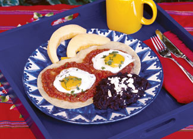

ROSALIND CREASY
Mexican ranchero sauce. The foundation of this sauce is grilled tomatoes and onions. Like many classic Mexican sauces, this one is “fried,” and it's great in enchiladas, casseroles, huevos rancheros, and over chili rellenos. Keep plenty in the freezer to use in a wide variety of recipes.